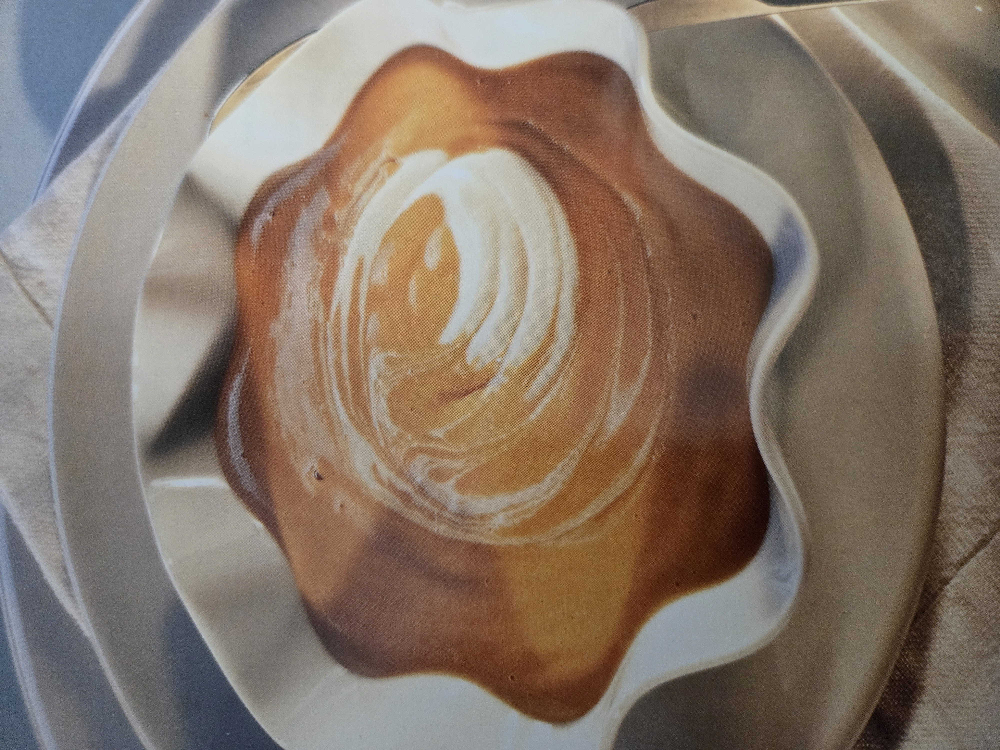

Zurück zur HomepageEs gibt kaum ein Dessert, das mit so wenigen Zutaten eine derart raffinierte Wirkung erzielt wie die gebrannte Creme. Sahne, Eigelb, Vanille und Zucker – mehr braucht es nicht, um diesen Klassiker der Patisserie zu zaubern. Gerade diese Einfachheit macht sie so anspruchsvoll: Jede Zutat muss stimmen, jede Temperatur muss passen, damit am Ende eine seidig-cremige Textur entsteht, die auf der Zunge zergeht.
Das Geheimnis liegt im langsamen Garen bei niedriger Temperatur im Wasserbad. Nur so stockt die Creme sanft und gleichmässig, ohne dass sich unschöne Bläschen bilden oder die Masse gerinnt. Wer hier Geduld beweist, wird mit einer Konsistenz belohnt, die perfekt zwischen fest und fliessend balanciert – zart genug, um mit dem Löffel förmlich zu schmelzen, und doch stabil genug, um ihre Form zu halten.
Der eigentliche Höhepunkt ist natürlich die berühmte Karamellkruste. Mit etwas braunem Zucker bestreut und mit dem Bunsenbrenner abgeflämmt, entsteht in Sekunden ein hauchdünner, glasklarer Zuckerspiegel, der beim ersten Löffel mit einem befriedigenden Knacken aufbricht. Dieser Kontrast – warm und knackig aussen, kühl und samtig innen – macht den besonderen Reiz dieses Desserts aus und sorgt für ein kleines Sinneserlebnis bei jedem Bissen.
Was die gebrannte Creme darüber hinaus so fein macht, ist ihre stille Eleganz. Sie drängt sich nicht auf, sondern überzeugt durch Präzision und Balance: die dezente Süsse, das feine Vanillearoma, die perfekte Textur. Ein Dessert, das beweist, dass wahre Raffinesse oft in der Reduktion auf das Wesentliche liegt.
5 EL Zucker, 2 EL Wasser und 2 Tropfen Zitronensaft zusammen mit Caramel aus Schritt 1 heiss auf ein mit Backpapier belegtes Blech giessen, auskühlen, vom Papier lösen. In einem Plastikbeutel mit dem Wallholz oder im Cutter zerkleinern. Vor dem Servieren unter die Creme mischen.